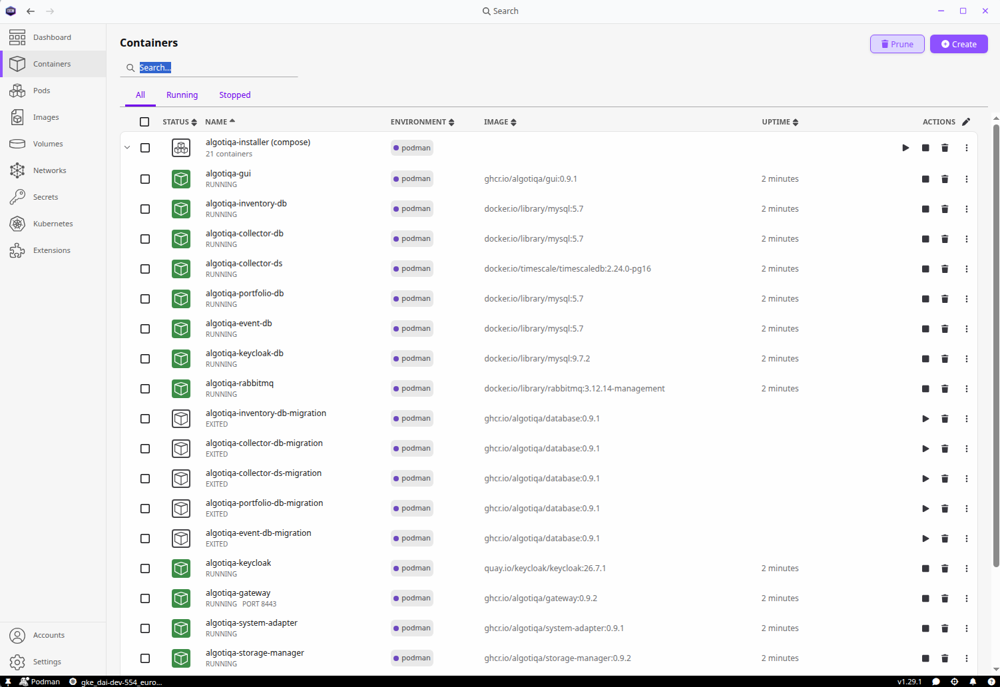
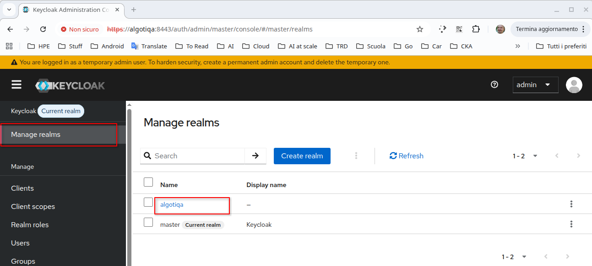
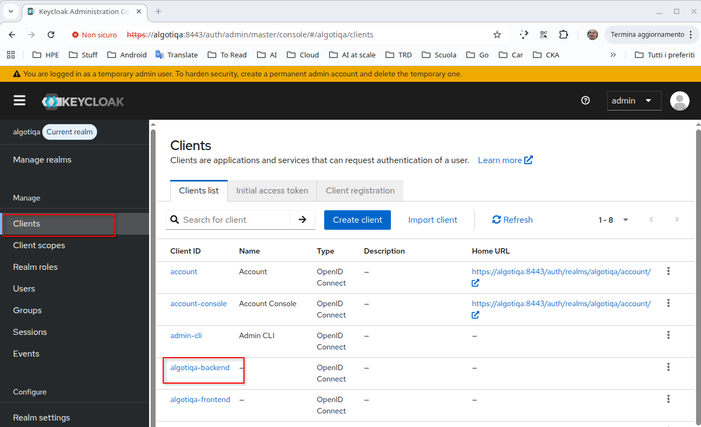
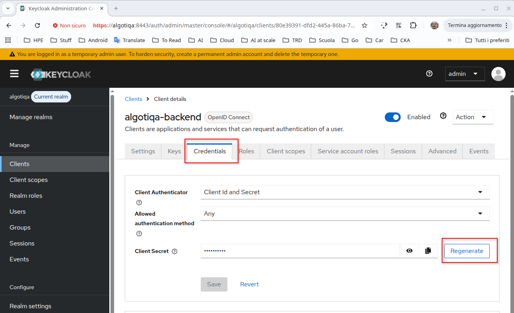
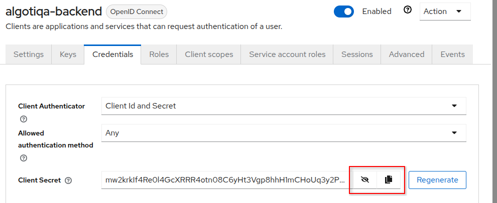
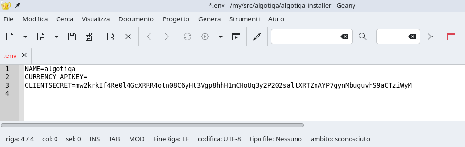
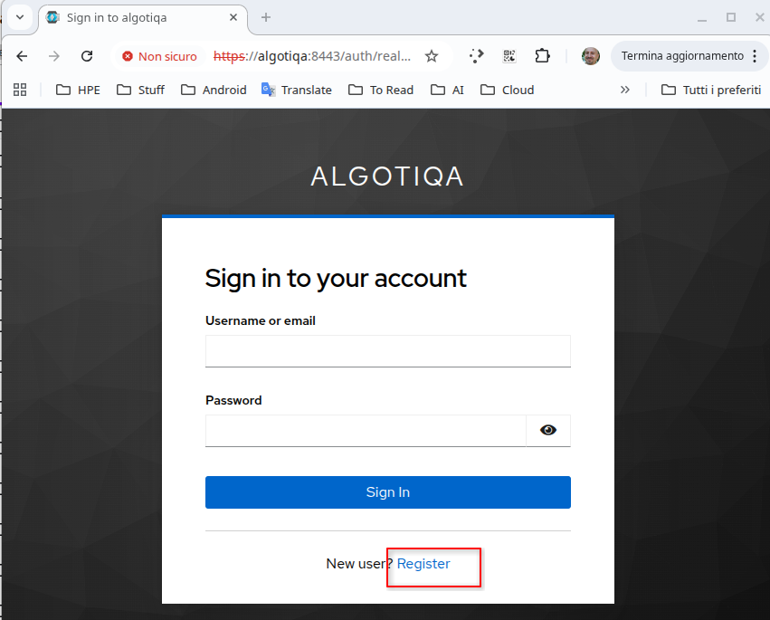

Local installation
Prerequisites
To run the platform, either docker or podman needs to be locally installed together with its compose package.
The requirements are below (assuming a single user):
| Requirement | Minimal | Recommended | Notes |
|---|---|---|---|
Memory |
16GB |
32GB |
Initially, the platform can even start with 8GB or less but as soon as more features are used, the platform will start to eat memory |
Disk space |
30GB |
100GB |
The minimum disk space is sized for around 12 markets (data products) and around 30 trading systems |
The local system must be able to resolve the algotiqa hostname to 127.0.0.1. This can be done adding algotiqa to the line where 127.0.0.1 is defined in the hosts file. The location of this file depends on the system:
-
Linux: the file is
/etc/hosts -
Windows: the file is
C:\Windows\System32\drivers\etc\hosts
A starting # character denotes a comment, so the line # 127.0.0.1 algotiqa is not valid.
|
Downloading the installer
The installer can be downloaded from https://github.com/algotiqa/install/releases/ . It is very small and after downloading simply unzip it into any folder. Make sure that the disk you select has enough free space.
Notes on Linux
When using Linux, it is important to extract the package maintaining the original file permission. Assuming that the installer 0.9.2 has been downloaded into the current folder, you can do that issuing the following commands:
mkdir algotiqa-installer
cd algotiqa-installer
tar xzf ../algotiqa-installer-v0.9.2.tar.gz -pStarting the platform
If you are using the command line interface, open a terminal inside the unzipped folder and issue:
docker compose up -d
# or
podman compose up -dThe first boot can take a few minutes as it:
-
downloads the containers
-
creates and fills the databases (migration containers)
-
imports the Keycloak realm
If you are using Podman, you may consider to also install Podman Desktop (https://podman-desktop.io/) to view and manage the containers. Using this tool, when the platform is fully started you should see a page similar to the following one:

Accessing the user interface
Configuration
Pointing your browser at https://algotiqa:8443/, you should see the login page now.
| Before registering and accessing the platform, there is a mandatory configuration step to follow. Please. read on. |
You need to log in into Keycloak’s administration console to generate the communication token between services. Point your browser at https://algotiqa:8443/auth/ (default administration credentials are admin / admin).
In the main page, click Manage realms on the left menu and then click on the algotiqa link in the middle of the page, as shown below:

The Algotiqa’s realm is now selected. Click Clients on the left menu and algotiqa-backend in the middle of the page, as shown below:

Now, click Credentials and then the Regenerate button:

Click Ok when the dialog "Regenerate secret for this client?" will pop up. At this point, the Client Secret is populated with the new token, but it is not visible. Click the eye button to make it visible and then the paste button to copy it into the clipboard. See below:

Now, go into the folder where the installer has been unzipped and edit the .env file. You have to set the token for the CLIENTSECRET variable:

The configuration is complete, just restart the platform (stop + start).
Opening the platform’s page
Open the https://algotiqa:8443/ link to see the login page. The first time, you will need to register a new account.

Stopping the platform
To stop the platform, simply enter the folder where the installer is located and issue:
docker compose downSome considerations on Podman
When Algotiqa is running on a Linux remote host, some extra care must be considered when using Podman. By default (at least on Ubuntu systems), Podman is not linked to systemd and doesn’t restart when the host is restarted. This behavior is fixed running the following commands:
sudo systemctl enable podman.service
sudo systemctl restart podman.service
sudo systemctl enable podman-restart.service
sudo systemctl restart podman-restart.serviceIn addition to that, we must be sure that the user processes (containers in our case) will remain active once disconnecting from a remote SSH shell. This is accomplished enabling lingering:
sudo loginctl enable-linger $USER
loginctl show-user $USER
UID=1000
GID=1000
Name=ubuntu
Timestamp=Wed 2026-09-09 07:16:55 UTC
TimestampMonotonic=1415950583854
RuntimePath=/run/user/1000
Service=user@1000.service
Slice=user-1000.slice
Display=485
State=active
Sessions=485 457
IdleHint=no
IdleSinceHint=0
IdleSinceHintMonotonic=0
Linger=yesThe last line, Linger=yes, proves that lingering is active.